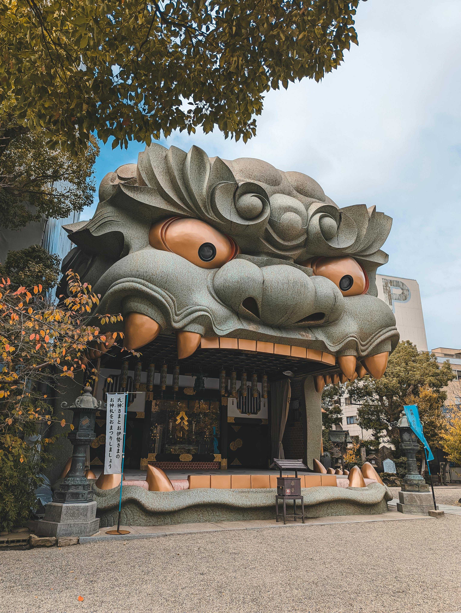
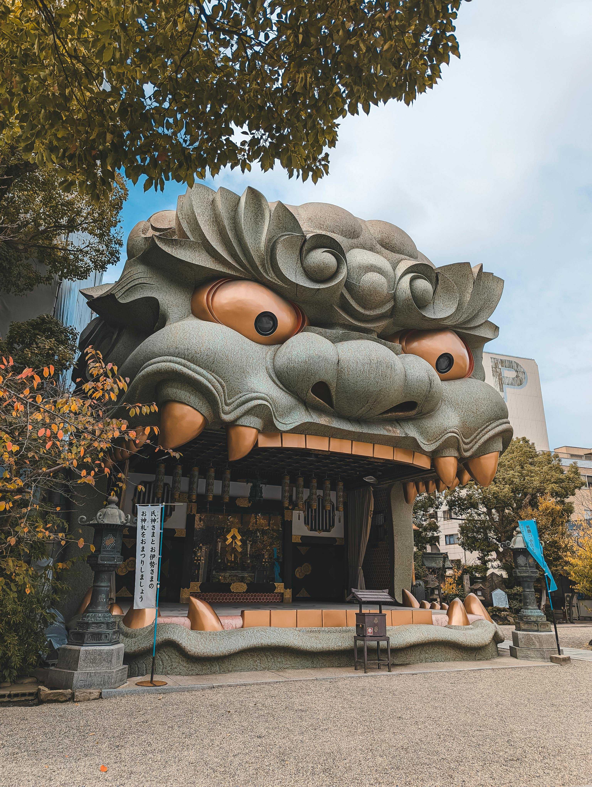

Japan is a captivating destination that offers a unique blend of traditional culture and modern innovation, making it an ideal vacation spot for a wide range of travelers. One of the main reasons someone might choose Japan is its rich cultural heritage, which is showcased through ancient temples, shrines, and traditional tea ceremonies. Visiting places like Kyoto’s historic Kinkaku-ji (Golden Pavilion) or Tokyo’s Senso-ji Temple provides an immersive experience into Japan's fascinating history and spiritual traditions. The preservation of ancient rituals alongside the country's embrace of modernity creates a stunning contrast that many travelers find fascinating and enriching.
 

In addition to its cultural offerings, Japan is renowned for its natural beauty. From the iconic Mount Fuji to the tranquil hot springs in Hakone, the country offers a variety of landscapes that can satisfy any nature enthusiast. The cherry blossom season in spring is particularly famous, drawing thousands of tourists who come to witness the stunning pink blooms in places like Tokyo’s Ueno Park or Kyoto’s Maruyama Park. Whether it's hiking in the Japanese Alps, enjoying the serene atmosphere of Zen gardens, or relaxing in the natural hot springs, Japan’s diverse natural scenery provides an unparalleled escape from the hustle and bustle of daily life.


Food lovers are also drawn to Japan for its world-class cuisine. Known for its sushi, ramen, and tempura, Japan offers an incredible range of culinary experiences. Visitors can enjoy everything from street food stalls offering takoyaki (octopus balls) to Michelin-starred restaurants serving intricate kaiseki (multi-course meals). The food culture in Japan is deeply ingrained in the daily life, and partaking in it is an integral part of the travel experience. Beyond the famous dishes, each region has its own specialties, making every meal feel like a discovery of new flavors and textures.


For those interested in technology and innovation, Japan is a global leader in cutting-edge advancements. Cities like Tokyo and Osaka are filled with futuristic architecture, neon-lit streets, and high-tech attractions like robot restaurants or interactive digital art museums. Additionally, Japan’s efficient and punctual transportation system, particularly its world-renowned Shinkansen (bullet trains), makes it easy for tourists to explore the country in a way that feels both modern and streamlined. These aspects of Japan provide a perfect blend of convenience, entertainment, and modernity, attracting those who are fascinated by technological advancement.
Finally, Japan offers a sense of tranquility and peace that is rare to find in other tourist destinations. The practice of mindfulness and respect for nature permeates many aspects of Japanese life. Visitors can experience this in the serene atmosphere of a traditional ryokan (inn), meditate in peaceful temples, or simply enjoy quiet moments in beautifully designed gardens. Japan’s emphasis on respect, discipline, and simplicity creates an environment where visitors can truly unwind, reflect, and connect with their surroundings, making it a perfect destination for those seeking a peaceful retreat.